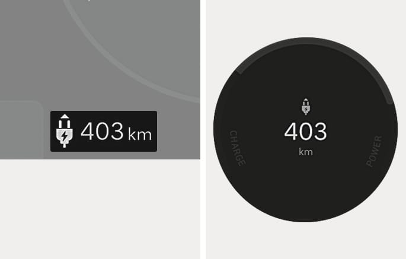

주행 가능 거리
A타입/B타입

2C_DistanceToEmpty
현재 배터리에 충전된 에너지로 주행할 수 있는 거리를 표시합니다.
-
자세한 설명은 '전기차 주행 정보 확인하기'를 참고하십시오.
주행 가능 거리는 운전 방식, 전기 사용량, 사용 환경, 고전압 배터리 충전량 등 다양한 주행 조건에 따라 결정되므로, 공인 인증 수치보다 높아지거나 낮아질 수 있습니다.

2C_DistanceToEmpty
현재 배터리에 충전된 에너지로 주행할 수 있는 거리를 표시합니다.
자세한 설명은 '전기차 주행 정보 확인하기'를 참고하십시오.
주행 가능 거리는 운전 방식, 전기 사용량, 사용 환경, 고전압 배터리 충전량 등 다양한 주행 조건에 따라 결정되므로, 공인 인증 수치보다 높아지거나 낮아질 수 있습니다.